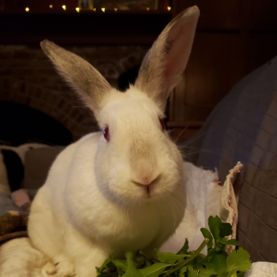

Armand
Breed: Californian Mix
Sex: Male
Age: 7 Years, 1 Month
Weight: 6.6 Pounds
Bio
My name is Armand. I came to Indiana after escaping floods in Louisiana!
I'm a very easygoing bunny and
I enjoy house rabbit life! I love, love, love to be petted. You can pet me all day. I'm also a big fan of my daily
salad and chowing on lots of hay!
During play time I like to do binkies, and during rest time I stretch
out and enjoy some sun coming in the window.
The doctors have been unable to find the source of my GI
troubles, I have had a LOT of tests! My foster mom does not mind the extra work and mess ;)
Want to Support Me?
To support me, or any of the sanctuary rabbits at the IHRS, please Donate to our GoFundMe if you are able.